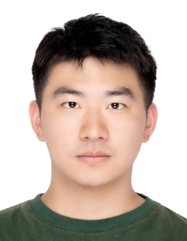

Ao Li (李骜)
I am currently a Lecturer at the College of Computer and Information Science, Chongqing Normal University (CQNU). My research focuses on low-level vision and efficient vision models, with a particular emphasis on image super-resolution. I am also interested in exploring how generative models and large multimodal models can contribute to this area.
Before joining CQNU, I received my Ph.D. degree from the University of Electronic Science and Technology of China (UESTC) in 2026, where I was jointly supervised by Prof. Le Zhang and Prof. Ce Zhu. I received my M.Eng. degree from Chongqing University of Posts and Telecommunications in 2020 and my B.Eng. degree from Chongqing University in 2017. Prior to my doctoral studies, I worked as a researcher at Sinovatio in 2021 and as a research assistant at UESTC in 2022.
Email: aoli.cq95@gmail.com / GitHub / Google Scholar
Open to collaboration Please feel free to contact me to discuss research ideas and potential projects.
Preprints
-
Rarity-Aware Discrete Diffusion with Spatially Consistent Decoding for Photo-Realistic Image Super-Resolution
Ao Li, Yapeng Du, Yi Xin, Lei Zhu, Le Zhang, Guangtao Zhai, Ce Zhu, Xiaohong Liu
arXiv preprint, 2026. PDF
-
Deep unfolding network for hyperspectral image super-resolution with automatic exposure correction
Yuan Fang, Yipeng Liu, Jie Chen, Zhen Long, Ao Li, Chong-Yung Chi, Ce Zhu
arXiv preprint, 2024. PDF
-
PASTA: Towards Flexible and Efficient HDR Imaging Via Progressively Aggregated Spatio-Temporal Alignment
Xiaoning Liu, Ao Li, Zongwei Wu, Yapeng Du, Le Zhang, Yulun Zhang, Radu Timofte, Ce Zhu
arXiv preprint, 2024. PDF
Publications
20262 publications
-
Real-Time Underwater Image Enhancement via Frequency-Guided Dual-Path Attention
Leshen Zhang, Ao Li, Ce Zhu
IEEE International Conference on Multimedia and Expo, 2026. PDFCode
-
DRNet: All-in-One Image Restoration via Prior-Guided Dynamic Reparameterization
Ao Li, Xiaoning Liu, Sheng Li, Yapeng Du, Zhen Long, Lei Luo, Le Zhang, Ce Zhu
20257 publications
-
IdCo: Joint Identification and Contrastive Learning for Masked Face Recognition
Qingtong Xu, Chao Zhang, Ao Li, Xiaoning Liu, Ce Zhu
IEEE International Workshop on Multimedia Signal Processing, 2025. PDF
-
Deep-Learning-Empowered Super-Resolution: A Comprehensive Survey and Future Prospects
Le Zhang, Ao Li, Qibin Hou, Ce Zhu, Yonina C. Eldar
-
Towards Real Zero-Shot Camouflaged Object Segmentation without Camouflaged Annotations
Cheng Lei, Jie Fan, Xinran Li, Tianzhu Xiang, Ao Li, Ce Zhu, Le Zhang
IEEE Transactions on Pattern Analysis and Machine Intelligence, 2025. PDFCode
-
MobileIE: An Extremely Lightweight and Effective ConvNet for Real-Time Image Enhancement on Mobile Devices
Hailong Yan, Ao Li, Xiangtao Zhang, Zhe Liu, Zenglin Shi, Ce Zhu, Le Zhang
-
Subspace Constraint and Contribution Estimation for Heterogeneous Federated Learning
Xiangtao Zhang, Sheng Li, Ao Li, Yipeng Liu, Fan Zhang, Ce Zhu, Le Zhang
IEEE/CVF Conference on Computer Vision and Pattern Recognition, 2025. PDFCode
-
Rethinking Token Reduction with Parameter-Efficient Fine-Tuning in ViT for Pixel-Level Tasks
Cheng Lei, Ao Li, Hu Yao, Ce Zhu, Le Zhang
IEEE/CVF Conference on Computer Vision and Pattern Recognition, 2025. PDFCode
-
Exploring Frequency-Inspired Optimization in Transformer for Efficient Single Image Super-Resolution
Ao Li, Le Zhang, Yun Liu, Ce Zhu
IEEE Transactions on Pattern Analysis and Machine Intelligence, 2025. PDFCode
Earlier Work6 publications
-
NTIRE 2024 Challenge on Low Light Image Enhancement: Methods and Results
Xiaoning Liu, Zongwei Wu, Ao Li, Florin-Alexandru Vasluianu, Yulun Zhang, Shuhang Gu, Le Zhang, Ce Zhu, Radu Timofte, et al.
IEEE/CVF Conference on Computer Vision and Pattern Recognition Workshops, 2024. PDF
-
Feature Modulation Transformer: Cross-Refinement of Global Representation via High-Frequency Prior for Image Super-Resolution
Ao Li, Le Zhang, Yun Liu, Ce Zhu
-
Soft transmission of 3D video for low power and low complexity scenario
Ao Li, Taihai Yang, Wenxin Wu, Lei Luo
Digital Communications and Networks, 2023. PDF
-
Real-time tracking of vehicles with siamese network and backward prediction
Ao Li, Lei Luo, Shu Tang
IEEE International Conference on Multimedia and Expo, 2020. PDF
-
Clustering-based Optimization for Side Window Filtering
Ao Li, Lei Luo, Ce Zhu, Zhi Jin, Shu Tang
IEEE International Symposium on Broadband Multimedia Systems and Broadcasting, 2020. PDF
-
An improved puncturing scheme for polar codes
Wei Liu, Yue Wang, Ao Li, Peng Yu, Fanqin Zhou
International Wireless Communications and Mobile Computing, 2020. PDF
Reviewing Service
- Journals: TPAMI, TIP, TMM, TCSVT, TNNLS, TBC, NN, Neurocomputing, JSTSP, TETCI.
- Conferences: CVPR, ICCV, ICML, AAAI, ICME, ICASSP.